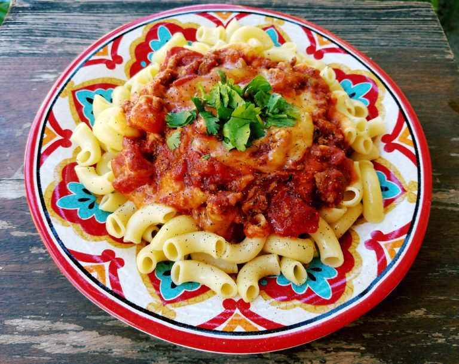

Hamburger Skillet

Description
Enjoy the ultimate comfort food with our Hamburger Skillet! This one-pan wonder
combines juicy ground beef, tender potatoes, sweet onions, and colorful
bell peppers, all perfectly seasoned and cooked to perfection. Enhanced by a
rich, tangy tomato sauce and topped with melted cheese, this dish delivers
all the flavors of a classic hamburger in a convenient, hearty meal. Perfect
for busy weeknights or casual family dinners, our Hamburger Skillet is a
guaranteed crowd-pleaser that everyone will love.
Ingredients
- 1 Box of Large Elbow Macaroni 16 oz
Add to Skillet:
- 1/2 Pound Lean Ground Beef
- 4 Garlic Cloves Chopped
- 1/2 Cup Onion Chopped
- 1/2 Cup Green Bell Peppers Chopped
- 1/4 Teaspoon Black Pepper
- 1/2 Teaspoon Garlic Salt
- 1/2 Teaspoon Red Pepper/Chili Flakes
- 1/2 Teaspoon Italian Seasoning
- 3/4 Cup Pre-made Beef Broth OR use
1 Beef Bouillon Cube + 3/4 of Hot Water to make the beef broth
- 1 Can Tomato Sauce 15 oz
- 1 Can Italian Style Diced Tomatoes 15 oz
- 1 Tablespoon Sugar
Top With:
- 1 8 oz Bag Shredded Blend of Mild Cheddar & Monterey Jack Cheese Cheese
(Optional: You can also use shredded Italian Blend cheese or
any cheese of your choice.)
- Handful Cilantro for garnish Optional
Serve With:
- Garlic Toast
Note:
- * If you like your pasta saucy, then do not cook the entire box of macaroni.
Instead only cook about 3 cups of it.
Steps
- Cook the macaroni according to the directions on the back of the box.
Don't forget to add salt to the water. ( I cooked my pasta for 9 minutes ).
Drain the pasta into a colander. There is no need to rinse it.
Just shake the colander to remove any excess water from the pasta.
Then dump the hot pasta into a baking pan with 3 tablespoons of butter.
Toss the pasta with the butter. The butter will prevent the pasta from
clumping together. Then set aside.
- Skip this step if you are going to be using pre-made beef broth.
If you are going to be making a beef broth from a bouillon cube then in
a bowl add 3/4 cup of water + 1 beef bouillon cube and microwave for 2 minutes.
Set it aside and let the cube dissolve .
- Next chop the garlic, green bell peppers and onion.
- In a skillet on Medium-High heat brown the beef. Break the beef into
smaller pieces. Drain the fat.
- Add the garlic, green bell peppers, onion and seasonings. Saute until the
onions turn translucent.
- Add the beef broth and let it come to a boil.
- Then add the tomato sauce, diced tomatoes and sugar. Then bring it back to a boil.
- Reduce the heat to Low. Cover and simmer for 15-20 minutes or until the sauce has
reduced and thicken to your desire. Stirring occasionally.
- Right before turning off the heat add the shredded cheese. Cover for 1 minute or until
the cheese is melted. Only add the cheese to the pan if you will be serving it immediately.
Otherwise if you decide to serve it a little later, then you can add some pasta to a dish,
pour some sauce over the pasta and give it a mix. Then add some shredded cheese and microwave
your plate for 1 minute and 30 seconds or until the cheese is melted.
- Sprinkle with black pepper.
- Garnish with chopped cilantro. (Optional)
- Serve with Garlic Toast.